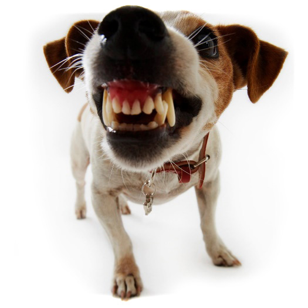

Lokalne psy ostrzegają!
woof woofwoof woofwoofwoofwoof woofwoofwoofwoofwoof woofwoofwoofwoo fwoofwoofwoofwoof woofwoofwoofwoof woof

woof woofwoof woofwoofwoofwoof woofwoofwoofwoofwoof woofwoofwoofwoo fwoofwoofwoofwoof woofwoofwoofwoof woof

1. Pięć cech charakteru psów. Psy wyróżniają się skłonnością do komunikacji, ciekawością otaczającego świata, miłością do zabaw, pewnym poziomem agresji oraz naturalnym talentem do tropienia. Te cechy definiują ich zachowanie w codziennym życiu.
2. Optymiści i pesymiści. Psy można podzielić na dwa typy osobowości. Jedne z entuzjazmem eksplorują teren, spodziewając się znaleźć jedzenie, podczas gdy inne unikają korzystania z nowych możliwości i są bardziej powściągliwe.
3. Zapach a godziny. Kolejną ciekawostką o psach jest to, że choć nie znają zegarów, ale potrafią wyczuć czas dzięki zapachom. Analizują intensywność zapachu właściciela w powietrzu oraz otaczające aromaty, takie jak kawa czy kosmetyki, by rozpoznać, która to pora dnia.
Znalezione na unizoo.pl